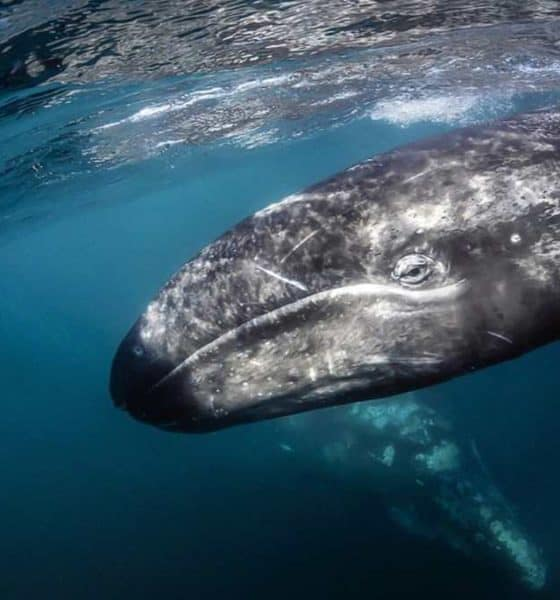
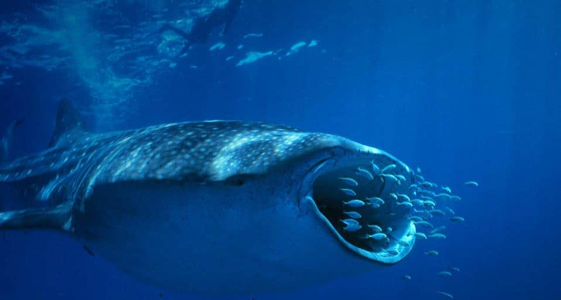
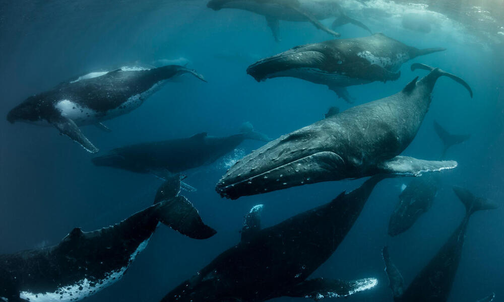
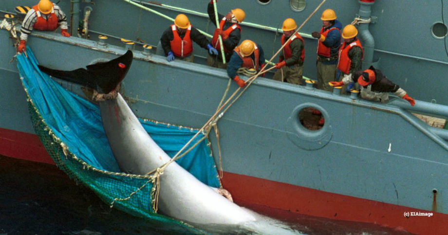
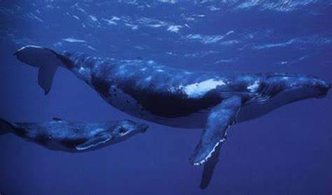

Las ballenas son mamíferos marinos de gran tamaño que habitan en todos los océanos del mundo. Existen alrededor de 80 especies de ballenas, y estas criaturas majestuosas han fascinado a los humanos durante siglos. Son conocidas por su inteligencia, su capacidad para comunicarse a través de sonidos complejos y sus impresionantes migraciones, que pueden cubrir miles de kilómetros anualmente.

Alimentación
Las ballenas se alimentan principalmente de krill, pequeños peces y plancton. Algunas especies, como la ballena azul, consumen grandes cantidades de comida diariamente, hasta 4 toneladas de krill por día. Los cetáceos como las ballenas jorobadas usan una técnica conocida como "burbujeas", donde crean una red de burbujas para atrapar a los peces en una pequeña área para luego alimentarse de ellos.

Migración
Las ballenas realizan migraciones anuales de miles de kilómetros, viajando desde las aguas frías donde se alimentan hacia las aguas más cálidas de las regiones tropicales para reproducirse. Este viaje es de vital importancia para su reproducción y supervivencia. La ballena jorobada, por ejemplo, viaja desde las frías aguas de Alaska hasta las aguas cálidas de Hawái o México.

Amenazas
Las ballenas enfrentan diversas amenazas debido a la actividad humana. La caza furtiva, aunque ha disminuido desde la prohibición internacional en 1986, sigue siendo un riesgo en ciertas áreas. La contaminación marina, como el plástico y los productos químicos, amenaza su salud. Además, las colisiones con embarcaciones y el ruido submarino, como el causado por el tráfico marítimo y las perforaciones petroleras, interrumpen sus comportamientos naturales, como la comunicación y la navegación.

Conservación
Existen diversas iniciativas de conservación para proteger a las ballenas, como la creación de santuarios marinos y la vigilancia de la caza ilegal. Organizaciones como Greenpeace y el Fondo Mundial para la Naturaleza (WWF) luchan por mejorar las condiciones del hábitat marino y reducir las amenazas humanas. A pesar de ello, las ballenas todavía están en peligro debido al cambio climático y la contaminación, que están alterando sus patrones migratorios.
Comportamiento Social
Las ballenas no son criaturas solitarias; de hecho, algunas especies forman complejas estructuras sociales. Las ballenas jorobadas, por ejemplo, son conocidas por sus "cantos", que pueden durar horas y son utilizados para atraer a potenciales parejas o comunicarse con otras ballenas. Además, en algunas especies, las madres y sus crías forman vínculos estrechos, cuidándose mutuamente durante su desarrollo.

Adaptaciones Asombrosas
Las ballenas tienen adaptaciones físicas impresionantes para sobrevivir en el océano. Tienen una capa gruesa de grasa conocida como "blubber" que les ayuda a mantener su temperatura en las frías aguas. Además, su enorme tamaño les permite almacenar grandes cantidades de oxígeno, lo que les permite sumergirse durante largos períodos sin necesidad de salir a la superficie.
El Canto de las Ballenas
Los cantos de las ballenas jorobadas son famosos por ser increíblemente complejos y bellos. Estos cantos pueden durar de 10 a 20 minutos y se repiten de forma continua. Cada grupo de ballenas tiene su propio "canto" que se transmite de una ballena a otra a través de grandes distancias.